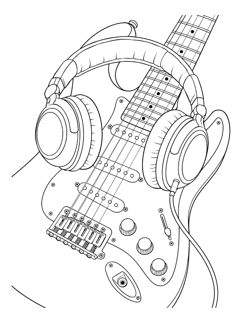

Pictures
Favorite General Conference talk:

Engagements
- What kind of photos are good to encode using JPEG? Digital photographs, web and social media sharing
- What kind of photos are good to encode using GIF? - Short Animated low res graphics
- What is unique about the PNG format? - It won't lose quality and can blend into backgrounds
- How do you resize your photo to the size it should be displayed?
- Why should you resize photos using photo editing software instead of resizing it using CSS? - Because with CSS the picture would not load as fast